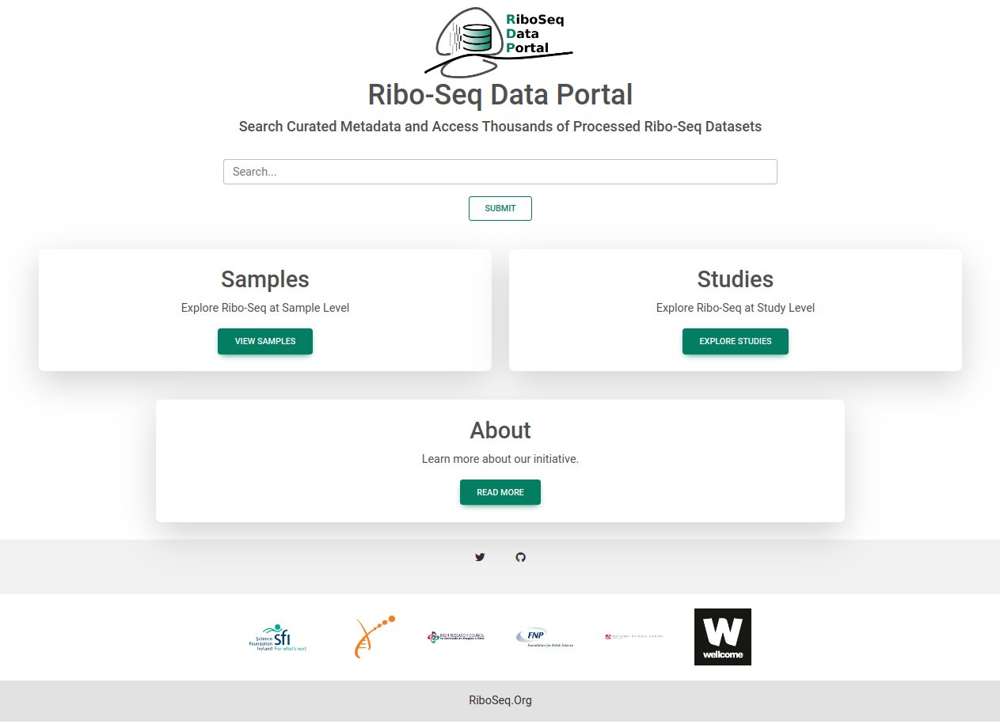
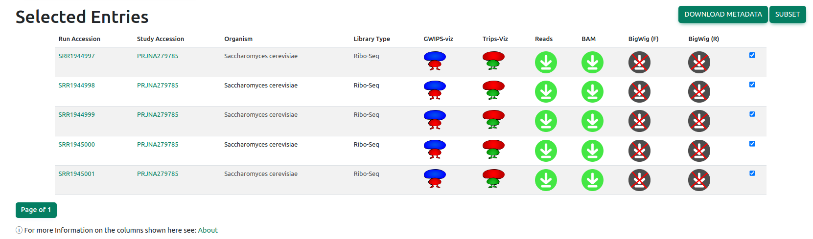

RiboSeq Data Portal (RDP) Overview
Learn the basic features of the RDP so you can easily explore existing Ribo-Seq datasets
1. The Homepage
From the homepage, you can search Samples and Studies databases or access view them directly by clicking their respective panels.
2. The Samples Page
The sample page gives a table view of a select few metadata columns containing key information such as library type and inhibitor. There are a number of points to note:
- Use the Filters panel to subset the databae and locate the samples you are interested in
- Click on the column headers to sort the table by that column (Just the entries you can see)
- Click on the sample accession to view more detailed information about that sample
- Click on the study accession to view more detailed information on all samples from that study
- Click on the 'Select All' button to select all samples in the current view
- Click on the 'Select All' button to select all samples in the current view
- Click on the 'DOWNLOAD METADATA' button to download the metadata for the selected samples
- Click on the 'GENERATE LINKS' button to get links to download files or view on browsers
- Click on the 'Options' button to download metadata for all samples or obtain links to all samples for the selected filters
You can search within the filters panel to locate the category you are interested in
3. The Studies Page
Exact same functionality as the Samples page!
- Click on the study name to view more detailed information about that study
- Click on the study accession to view that study on BioProjects
4. The Links Page
Here you can find links to download the raw data files for the samples in the database or view the selected files on the browsers.
At the top of the page you can choose to download all file or visualise all files in GWIPS-viz or Trips-Viz
Below those links is a table of the selected files that allows you to download or view individual samples
Queries?
If there are any further queries please don't hesitate to contact us: riboseq AT gmail DOT com